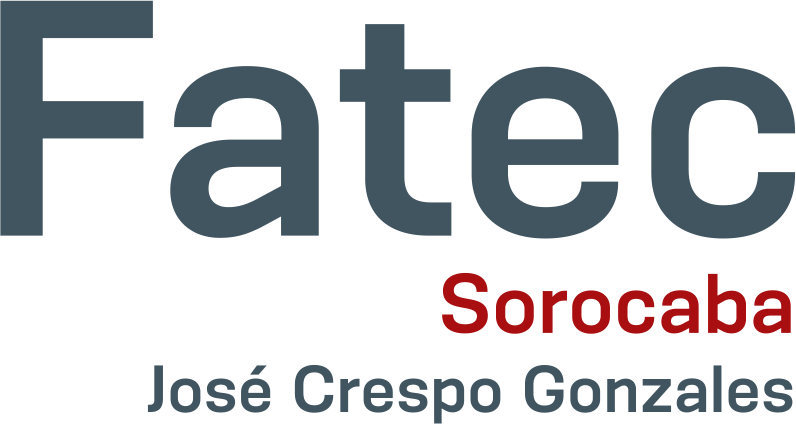

Formação Acadêmica

> Terminei o Ensino Médio em 2017 na E.E. Prof. Júlio Bierrenbach Lima.
> Enquanto estava no Ensino Médio, cursei técnico em Administração no IFSP Sorocaba.
> Curo Análise e Desenvolvimento de Sistemas, na FATEC Sorocaba e estou atualmente no 4º semestre.
> Participei do 2º Coworking das Universidades de Sorocaba
Site da FATEC Sorocaba
Site do Coworking das Universidades de Sorocaba